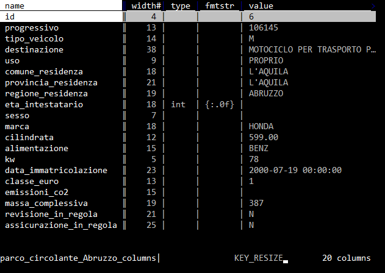
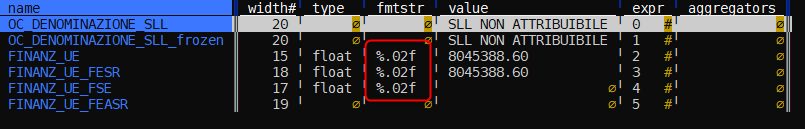
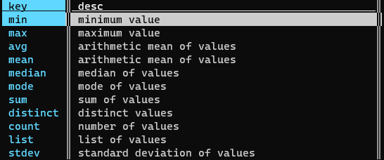
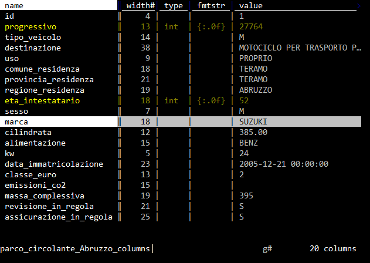
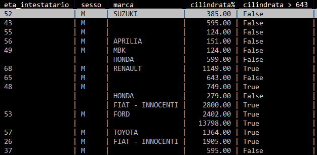
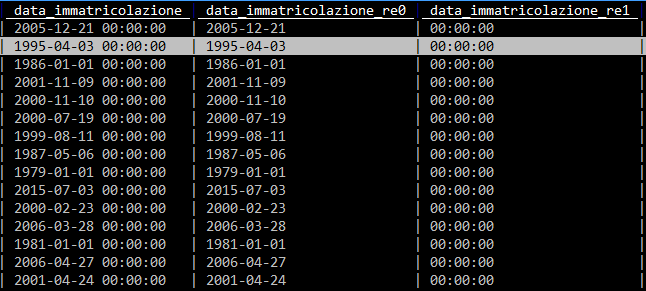
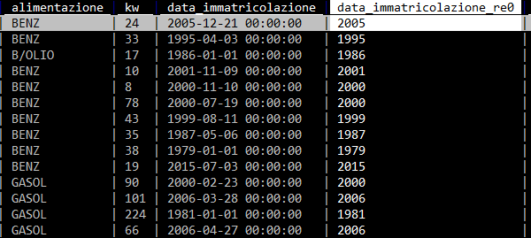
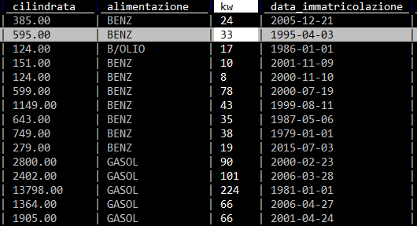

Lavorare sulle colonne¶
Ogni colonna in VisiData ha 3 attributi principali:
Name, il nome della colonna;Width, la larghezza a schermo della colonna (se impostata a 0, la colonna diventa invisibile);Type, per definire se contiene testi, numeri interi, numeri decimali, monete o date.
Il foglio delle colonne¶
In VisiData esistono i cosiddetti meta-fogli (vedi sopra): uno di questi è il foglio delle colonne, che elenca tutte le colonne e i relativi attributi di una tabella.
A partire dalla visualizzazione di una tabella, si apre con Shift+c.

È una delle caratteristiche di VisiData che consente una rapida prima lettura del dato, che personalmente uso anche ad esempio per costruire brevi relazioni che contengono schema dati.
Impostare il tipo di campo¶
Come impostazione predefinita VisiData imposta a "testo" la tipologia di tutti i campi (che è quello che faccio di solito anche io alla prima apertura sia in un foglio elettronico che in Pandas).
Per definire il tipo di campo di una colonna della tabella che si sta visualizzando (cosa che consente di fare correttamente ad esempio operazioni di ordinamento, matematiche, ecc.), si deve navigare sino alla colonna su cui si vuole intervenire e poi pigiare:
#, per definire un campo con numeri interi (0, -1, 5000000)%, per definire un campo con numeri decimali (0.5, -3.14, 23.45557)$, per definire un campo con monete ($4.99, €20)@, per definire un campo con date (2018-04-06, April 6, 2018, 04/06/2018)~, per definire un campo di testo (qualsiasi cosa!)
Impostare numero di decimali in un campo floating¶
Di default i campi floating sono renderizzati con due decimali (la formattazione è impostata come %.02f).
Per modificare la cosa si può aprire il foglio delle colonne (SHIFT+c) e modificare il valore di formattazione delle colonna fmtstr (vedi sotto).

Per passare a tre decimali per un campo, basterà ad esempio modificare la cella della colonna di interesse da %.02f a %.03f (in edit di cella si va con il tasto e).
Se si vuole fare su più colonne:
- si apre sempre il foglio delle colonne;
- si selezionano le colonne di cui si vuole cambiare la formattazione;
- si va sulla colonna
fmtstr; - si va in modifica globale con
gee si inserisce il valore di formattazione desiderato; - si preme
INVIOper applicare la modifica.
Impostare formato data personalizzato¶
Se una cella contiene ad esempio la data 06/11/2020 (qui come 6 novembre 2020), e imposto la colonna come data con il tasto @, visidata la interpreta come 2020-06-11, ovvero come 11 giugno.
Per impostarla correttamente bisogna impostare un formato data personalizzato:
- si va sulla colonna con le date;
- si digita
z@e si preme INVIO; - si imposta il formato - in questo caso
%d/%m/%Y- e si preme INVIO.
In output si avrà 2020-11-06.
Rinominare le colonne¶
Per farlo si naviga sino alla colonna che si vuole rinominare e poi:
- si pigia
^; - si digita il nome che si vuole assegnare;
- si pigia
Invio.
Rinominare le colonne in blocco¶
Può essere utile ad esempio anteporre dei caratteri a tutte le colonne che iniziano per t.
Questi i passi:
- si apre il foglio colonne con
shift + c; - si va nella colonna con il nome delle colonne (è la prima);
- si digita
|, si scrive^te si pigiaINVIO(saranno selezionate tutte le colonne che iniziano con il caratteret); - si pigia
g*, per attivare il trova e sostituisci via regex; - si scrive
^(t.+)/TR_\1e poiINVIO.
Tutte le colonne che iniziano per t, avranno un nuovo nome corrispondente al precedente, con TR_ come prefisso. La colonna tabacco, diventerebbe ad esempio TR_tabacco.
Come espandere, ridurre e rimuovere colonne¶
Questi gli shortcut:
_, per espandere la larghezza della colonna corrente, alla larghezza massima del testo contenuto nella stessa, tenendo conto delle righe visualizzate a schermo;g_, per espandere la larghezza di tutte le colonne, alla larghezza massima del testo contenuto, tenendo conto delle righe visualizzate a schermo;z_ + n, per impostare la larghezza della colonna corrente ancaratteri;-, per nascondere la colonna corrente (viene impostata a 0 la sua larghezza);gv, per scoprire tutte le colonne nascoste;z-, per ridurre la larghezza della colonna corrente alla sua metà.
Spostare una colonna¶
Ecco come farlo:
Shift+h, sposta la colonna corrente di una posizione a sinistra;Shift+l, sposta la colonna corrente di una posizione a destra.
Modificare una colonna tramite un'espressione Python¶
A questa tabella si vuole assegnare al campo FieldA il valore di FieldB, tutte le volte che FieldA è vuoto.
| FieldA | FieldB |
|---|---|
| 1 | |
| 3 | |
| 1 | 12 |
Questa la procedura:
gsper selezionare tutte le righe;g=per scrivere l'espressione Python;- aggiungere come espressione
FieldB if FieldA=="" else FieldA.
Ovvero (FieldA) è uguale FieldB se FieldA non contiene nulla, altrimenti è uguale a se stesso (rimane invariato).
Calcoli per colonna¶
È possibile avere restituito, per una colonna, il risultato di uno dei calcoli di aggregazione disponibili:

Ad esempio per avere la somma dei valori di una colonna con numeri interi:
- si imposta il tipo di colonna a numero intero (con
#); - si digita
z+e poiINVIO; - si digita
sume poiINVIO.
In basso, si leggerà il valore risultante.
Nota bene
Se nessuna riga è selezionata si avrà il totale per colonna, altrimenti il calcolo sarà applicato per colonna alle sole righe selezionate.
Come definire una colonna chiave¶
Per ogni foglio è possibile definire una o più colonne chiave. Hanno due funzioni principali:
- rimangono fissate sul lato sinistro, quando si naviga orizzontalmente sulla tabella;
- hanno una funzione speciale quando si fanno certe operazioni (come quelle di JOIN, per alcuni conteggi, ecc.).
Per definire una colonna chiave (e vice-versa) si naviga sino alla colonna di interesse e si pigia !.
Manipolare le colonne dal foglio delle colonne¶
Il foglio delle colonne oltre a dare una visione di insieme, consente di fare delle rapide modifiche in blocco. È possibile spostare le colonne con Shift+j e Shift+k, rinominarle con e, impostare il tipo per tutte quelle selezionate, impostare la larghezza per tutte quelle selezionate.
Ad esempio a partire dal Parco Circolante dei veicoli dell'Abruzzo, il foglio colonne (Shift+c) appare in questo modo.

Se si vuole impostare a "numero intero" le colonne progressivo e eta_intestatario, bisognerà prima selezionarle con s.

Poi premere g#.

Creare una nuova colonna¶
Sono tre le modalità più comode:
- come risultato di un'espressione Python;
- come risultato di un comando di split;
- come risultato di estrazione di una porzione di testo da una colonna.
Nuova colonna tramite espressione¶
Ad esempio potrebbe essere utile creare una colonna vero/falso, per tutte le auto del Parco Circolante dei veicoli dell'Abruzzo, con cilindrata maggiore ai 643 (è un numero a caso). Per farlo:
- navigare sino alla colonna
cilindrata; - premere
%per impostarla come numero decimale; - pigiare su
=; - nel prompt in basso a sinistra scrivere
cilindrata > 643; - premere
Invio.
In output qualcosa come quella di sotto, con la nuova colonna risultato di un'espressione Python.

Nuove colonne come risultato di splitting¶
Si possono creare nuove colonne, come risultato di una suddivisione di una già esistente. Ad esempio nel campo data_immatricolazione è contenuta sia la data che l'orario, separati da spazio (i.e. 1995-04-03 00:00:00).
Se si vuole suddividerla in due colonne (data e orario), si può procedere in questo modo:
- si naviga sino alla colonna
data_immatricolazione; - si preme
:; - si sceglie la stringa di testo (definibile anche come espressione regolare) da usare come separatore e si scrive in basso a sinistra nel prompt. In questo caso è lo spazio;
- si digita quindi lo spazio e si dà
Invio.
Come output si avrà qualcosa come quella di sotto: due colonne frutto della divisione in più colonne, sfruttando come separatore lo spazio.

Nuove colonne come risultato di cattura e estrazione¶
Per farlo ci vogliono delle conoscenze di base sulle espressioni regolari (che sono una conoscenza propedeutica per chiunque lavori con i dati).
Se si vuole ad esempio estrarre l'anno dalla celle che contiene il valore 1995-04-03 00:00:00, basterà definire l'espressione regolare che estrae a partire dall'inizio della cella i primi 4 numeri. Che in termini di espressione regolare è ^[0-9]{4}.
Per creare una nuova colonna a partire dalla definizione di un'espressione regolare da usare come "estrattore", si procede in questo modo:
- si naviga sulla colonna
data_immatricolazione; - si pigia
;; - si scrive nel prompt in basso a sinistra
^([0-9]{4}). Sono state inserite le parentesi tonde, perché la cattura si fa a partire dalla definizione di un gruppo; - si pigia
Invio.
E si ottiene qualcosa come quella di sotto:

Trasformare una colonna tramite espressione regolare (trova e sostituisci)¶
Su ogni colonna è possibile fare delle trasformazioni basate su espressioni regolari. Se ad esempio si vogliono rimuovere dalle celle della colonna data_immatricolazione le informazioni sull'orario e passare quindi da 1995-04-03 00:00:00 a 1995-04-03 si può procedere in questo modo:
- si selezionano le righe su cui si vuole fare questa trasformazione (se sono tutte il comando è
gs); - si va nella colonna
data_immatricolazione; - si pigia su
g*; - si scrive nel prompt
.*$/. Il simbolo/in VisiData separa ciò che si cerca, da ciò con cui si vuole sostituire. Qui si cerca uno spazio (), seguito da qualsiasi carattere sino a fine cella (.*$), e si vuole sostituire con nulla; - si pigia
Invio(ci vorrà un po' di tempo, sono più di un milione di righe).
Il risultato sarà qualcosa come quella di sotto:

Questo è un "trova e sostituisci" per colonna.